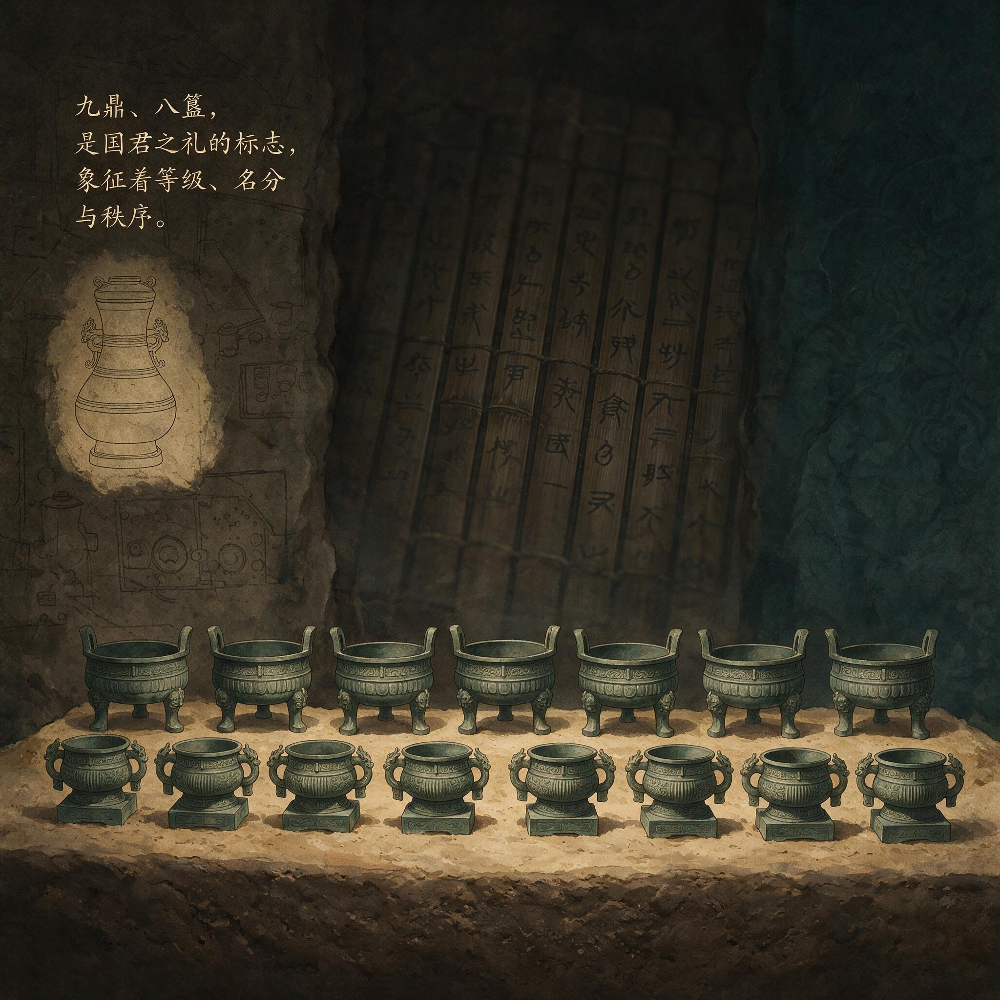

第 19 章
鼎簋之间的名分
“对墓中的木炭进行实验测量，证明了年代为公元前433年稍晚的推断是合理的。”
这句话印在发掘报告的第几页我忘了。但你得先知道木炭是从哪儿来的——椁室顶部和四壁，整整铺了一层，厚度超过半米。考古队把木炭铲出来装袋过秤的时候，这东西的身份还是“积炭层”，跟防水防潮有关。等样本送到实验室，碳十四的半衰期一开始工作，积炭层就变成了时间戳。指针落在一个刻度上：公元前五世纪后半叶。楚惠王五十六年。曾侯乙下葬。

曾侯乙墓九鼎八簋组合
AI 生成插图，非史实影像。
年代定了。墓主姓姬名乙，曾国国君，爵位侯。身份一落地，接下来的问题就绕不开了：这个人凭什么用这些东西？前几章我们看过了编钟的音律体系，看过了戈戟丛中的技术选择，看过了漆木之下的楚风暗涌，看过了玉器里的减法美学。这些东西各自讲着各自的故事——有的讲周，有的讲楚，有的讲不清自己到底想讲什么。
但今天我们要把目光从这些热闹的家伙身上移开，落在一组最沉默、最不花哨、最容易被游客跳过的器物上。中室那套食器。鼎。簋。鬲。甗。这四个字今天的人念起来都磕巴。博物馆的展签写着“青铜鼎”“青铜簋”，观众扫一眼，拍张照，走了。
编钟那边还排着队呢。但你得知道，在曾侯乙活着的那年头，这四样东西的分量比编钟重。不是重在实际重量——最大的那件鼎也就几十公斤——是重在一套规矩上。
这套规矩叫周礼。它在鼎和簋之间划了一道线。这道线就是名分。什么叫名分？用今天的话讲：你是什么级别，你就用什么套餐。
天子九鼎八簋，诸侯七鼎六簋，大夫五鼎四簋，士三鼎二簋。这不是建议，不是推荐标准，是硬性规定。你越了线，不叫奢侈，叫僭越。僭越在那个时代是政治罪名，严重程度大概相当于今天的违宪——只不过违宪走的是法庭，僭越走的是征伐。春秋三百年，多少场战争的檄文里写着同一句指控：尔用九鼎。你用了九鼎，你就是找死。
所以当我们看清曾侯乙墓中室那套食器的数量时，你得停一下。九鼎。八簋。这不是诸侯的规格。这是天子的规格。但别急着下结论。考古学最忌讳的就是拿文献硬套实物——套上了就欢呼“印证了文献”，套不上就说“文献失载”。曾侯乙墓的九鼎八簋到底是怎么回事，得一件一件看，一个数字一个数字地抠。
中室出土的鼎不是九件，是二十二件。这个数字一出来，九鼎的说法就站不住了？不。
周礼里的“九鼎”不是说只能有九件鼎，是说正鼎——祭祀和宴飨时摆在最核心位置的那套列鼎——必须是九件。列鼎是一套形制相同、大小相次的鼎，它们成套出现，单独一件拿出来没有意义。曾侯乙墓中室的二十二件鼎里，正好有一套九件形制相同、大小递减的列鼎。这套鼎摆在哪儿？摆在中室最显眼的位置，正对墓主棺椁的方向。
九鼎找到了。簋呢？中室出土簋八件，形制相同，大小一致。八簋配九鼎——这是天子之礼。
问题来了：曾侯乙是天子吗？当然不是。他是曾国国君，爵位是侯。周礼规定诸侯七鼎六簋。他怎么就用了九鼎八簋？这个问题在学术界吵了几十年。一派说，西周晚期到春秋早期礼制已经崩坏，诸侯用天子礼司空见惯，曾侯乙不过是随大流。另一派说，曾国是周王室同姓诸侯，地位特殊，可能被特许使用天子礼。
还有一派说，战国早期的“侯”已经不是西周分封意义上的侯了——曾侯乙实际掌控的权力和地盘可能相当于一个独立王国，他用九鼎是自我加冕。
三派各有各的道理，也各有各的漏洞。说礼制崩坏的，解释不了为什么同墓出土的其他器物——编钟的排列、车马坑的规制、棺椁的层数——全都严格遵循诸侯之礼。如果曾侯乙真的自我加冕了，为什么不把全套配置都升一级？为什么偏偏在鼎簋上越线，在其他地方老老实实？说特许的，找不到任何文献证据。传世文献里提到曾国的地方少得可怜——曾国这个国家本身就是靠考古挖出来的——哪来的特许记录？
说独立王国的，解释不了曾侯乙墓里那件楚惠王送的镈钟。如果曾国是独立王国，楚王为什么要送钟？送钟在那个时代是邦交行为，是国与国之间的礼仪。楚惠王送钟给曾侯乙，说明在楚国眼里曾国是一个有邦交关系的主体——但同时也说明曾国和楚国之间不是宗主与附庸的关系。附庸国不需要邦交，直接下令就行了。所以九鼎八簋这件事不能单从“他用了什么”来看。
得追问：为什么敢用？追问的第一步，是搞清楚一个基本事实：战国早期，九鼎八簋这套标尺在大多数诸侯国已经松动了。不是松动了一点点，是彻底松了。怎么个松法？
看几座同时期的墓葬。公元前五世纪中叶——大概就是曾侯乙下葬前后这几十年——晋国赵卿墓出土的列鼎是七件，配簋四件。赵卿是晋国正卿，地位相当于副国君。按周礼应该用五鼎四簋。他用了七鼎四簋——鼎多用了两级，簋却只配了四件。这说明什么？说明鼎和簋之间的配对关系已经乱了。鼎的数量可以随便加，簋的数量没人计较了。
再看楚墓。河南淅川下寺楚墓，墓主是楚国令尹子庚，下葬时间比曾侯乙早大约一百年。子庚墓出土列鼎七件，簋只有两件。七鼎两簋——这已经不是礼制松动的问题了，这是礼制被重新定义。
楚国自己搞了一套标准：鼎可以多，簋可以少，关键是鼎要够大、够重、够气派。楚式鼎的特点是什么？深腹、高足、大耳，一看就比周式鼎更实用、更能装肉。楚人不在乎簋——簋是盛黍稷的，黍稷是周人农业的主粮。
楚人吃稻米，对黍稷没感情，对簋自然也不上心。再看秦国。陕西凤翔秦公一号大墓——秦景公的墓——下葬时间比曾侯乙晚不了多少年。这座墓被盗过，列鼎的数量无法确定，但从残留的器物组合来看，秦国的礼器配置已经和中原系统分道扬镳了。秦人用的鼎形制粗重、纹饰简率，和周式鼎的典雅精致完全是两个路子。簋的数量更没法追究——秦人似乎根本不把簋当回事。三个大国——晋、楚、秦——全都在礼器组合上走了自己的路。有的乱配，有的简化，有的另起炉灶。
这时候你再看曾侯乙墓中室那套食器：九鼎八簋，形制规整，大小有序，纹饰统一。鼎是标准的周式鼎——浅腹、矮足、小耳，比例匀称，纹饰用的是西周中期以后流行的窃曲纹和重环纹。簋也是标准的周式簋——圈足、双耳、带盖，盖上和腹部各饰一圈夔龙纹。鬲九件，甗一件。鬲是煮粥的，甗是蒸饭的。鬲九件配鼎九件，甗单独一件摆在旁边——这套组合如果放在西周晚期的王室墓葬里，一点违和感都没有。为什么曾国能做到这一点？不是因为曾国保守。
前几章我们讲过，曾国在漆木器上全面倒向楚风，在铭文书风上分裂成三种面孔，在玉器上死守西周减法美学——这个国家的文化策略不是简单的“守旧”或“趋新”，而是一套精密的、分领域的选择性编码。青铜礼器是一个领域，漆木器是另一个领域，玉器是第三个领域。每个领域的选择不一样，但选择背后的逻辑是一致的：在楚国看得最紧的地方让步，在楚国不在乎的地方坚守。
楚国看得最紧的是什么？漆木器。楚国的漆器工艺天下第一——楚墓出土的漆器数量多、品类全、纹饰繁复。曾国如果在这个领域和楚国较劲，既较不过，也没必要较。漆器是日常生活用品，不承载政治身份。所以曾国在漆器上全面学习楚风，甚至可能直接雇佣楚国工匠来制作。
楚国不在乎的是什么？青铜礼器的周式规制。楚人自己都乱配鼎簋了，他们不在乎你怎么配。楚王在乎的是你有没有按时纳贡、有没有派兵随征、有没有在邦交场合承认楚国的霸主地位。至于你在自己宗庙里摆几件鼎几件簋——那是你的事。
所以曾侯乙在鼎簋上死守周礼，不是因为楚国逼他守，恰恰是因为楚国不逼他守。楚国不逼他守的地方，就是他可以自由表达政治身份的地方。这个判断需要证据支撑。证据在哪？
在中室那套食器的铭文上。曾侯乙墓出土的青铜礼器上刻满了同一行字：“曾侯乙作持用终”。这七个字出现在鼎上、簋上、鬲上、甗上、鉴上、盘上、匜上——中室几乎所有青铜容器上都有这行铭文。考古报告统计过：45件甬钟上有“曾侯乙作持”，其他青铜礼器、用器及其附件共125件中，有117处“曾侯乙”的铭文。117处。这个数字意味着什么？
意味着曾侯乙的名字几乎覆盖了中室每一件看得见的青铜器表面。这不是炫耀财富。炫耀财富不需要刻名字——黄金珠宝本身就在炫耀财富。刻名字是一种政治行为。“曾侯乙作持用终”——我曾侯乙制作这件器物，永远持有它、使用它。“作”是制作，“持”是持有，“用”是使用，“终”是终结。四个动词连在一起构成了一条完整的物权链条：我做的，我拿着，我用着，我用到底。
这条物权链条的背后是一套政治逻辑：这件鼎是我的，不是楚国赏赐的；这件簋是我的，不是从周王室继承来的；这套礼器组合是我曾侯乙以曾国国君的身份自行配置的——我有这个权力，我行使了这个权力。
对比一下楚惠王送的那件镈钟上的铭文：“楚王熊章作曾侯乙宗彝，奠之于西阳。”楚王熊章为曾侯乙制作宗庙礼器，陈放在西阳——西阳是曾国都城。这件钟是楚王送的礼物，铭文写明了送礼的人、受礼的人、陈放的地点。这是一份邦交文书，刻在青铜上。两套铭文放在一起看，曾侯乙的政治处境就清楚了：一方面，他接受楚王的赠礼，承认楚国在邦交关系中的优势地位；另一方面，他在自己的礼器上刻满自己的名字，用117处“曾侯乙”向所有进入宗庙的人宣告——这些东西是我的，这个国家是我的，这套礼仪是我主持的。
这就是名分。名分不是虚的。名分要落实在器物上、铭文上、数量上、排列上。九鼎八簋不是数字游戏——是曾侯乙在楚国政治阴影下为自己划出的一条边界。这条边界以内，一切按照周天子的规矩来；
这条边界以外，楚国说了算。但这里还有一个更深的问题：九鼎八簋代表的天子之礼，曾侯乙用起来真的名正言顺吗？诸侯按周礼应该用七鼎六簋。曾侯乙用九鼎八簋，严格来说是僭越了一级。这一级是怎么僭越的？是自己偷偷加的？还是有什么历史渊源？
这个问题得从曾国的身世说起。曾国是西周早期周王室分封在随枣走廊的同姓诸侯，始封君是南宫适——就是《封神演义》里那个南宫适。南宫适在周武王伐纣时立过大功，周王室把他封在汉水以东，任务是镇守南土、监控楚蛮。这个任务决定了曾国的政治基因：它是周王室在南方的代理人。代理人的身份意味着什么？意味着它的权力来自周王室，它的合法性也来自周王室。只要周王室还在，曾国就是正统诸侯；周王室衰落了，曾国的合法性就悬空了。
春秋时期周王室衰落了五百多年。到曾侯乙的时代，周天子已经沦为一个象征符号——洛阳城里那个王还在，但他的话连洛阳城外都传不出去。曾国怎么办？它不能换一个合法性来源。姬姓诸侯的合法性只能来自姬姓天子。
所以曾国越是在现实中依赖楚国的保护——这一点前几章已经论证过了——就越需要在礼仪上强化自己和周王室的关系。怎么强化？用天子之礼。
这不是逻辑矛盾。这是政治补偿。你在现实中对楚国称臣纳贡，你在礼仪上就必须对周天子加倍尊崇——否则你的身份就彻底漂移了。一个人如果既对楚国称臣又不尊周礼，那他就真的变成楚国的附庸了。但如果你对楚国称臣却坚持用周天子的礼仪规格祭祀祖先，你就仍然是一个周室诸侯——处境困窘但身份未失。处境困窘和变成附庸是两种完全不同的政治状态。
所以九鼎八簋不是僭越——或者说，在曾国自己的政治逻辑里不是僭越。它是政治补偿机制的一部分：失去了军事自主权，失去了外交自主权，失去了领土扩张的可能——这些东西都失去了，但不能失去身份。身份必须落实在器物上。九鼎八簋就是身份的物质载体。
这个解释能不能成立？需要找旁证。旁证在哪里？在中室那套食器的摆放位置上。考古报告记录了每件器物出土时的精确位置。中室的食器不是乱堆在一起的。
九件列鼎排成一列，从大到小依次摆放，鼎口朝东——朝向墓主棺椁所在的方向。八件簋分成两组，每组四件，分别放在列鼎的两侧。鬲九件放在列鼎后方稍远的位置。甗单独放在东南角。
这个布局不是随机的。它对应的是周礼规定的宗庙祭祀场景。《仪礼·聘礼》记载诸侯祭祀时“鼎东陈”“簋夹鼎”“鬲在后”“甗在隅”。曾侯乙墓中室的食器布局和这段文献描述几乎完全吻合。吻合到什么程度？吻合到你可以拿着《仪礼》的文字直接对照考古平面图：鼎在东边排成一列——对上了；簋夹在鼎的两侧——对上了；鬲放在鼎的后面——对上了；甗放在东南角——对上了。
这不是巧合。这是有人在下葬之前拿着周礼的文本一项一项核对过摆放位置。谁核对的？曾侯乙的儿子？曾国的礼官？不知道具体的人名。但知道这个人的存在——因为中室食器的布局精确到了每一件器物和相邻器物之间的距离都大致相等。九件列鼎之间的间距大约在二十到三十厘米之间，误差不超过一掌宽。八件簋和列鼎的距离也大致相当。
这种精确度不可能是随手摆放的结果。这意味着什么？意味着曾侯乙的葬礼有一套严格的程序在执行。这套程序的依据是周礼文本——可能写在竹简上，可能记在礼官的脑子里。执行这套程序的人清楚地知道每一件器物应该放在哪里、朝向哪里、和哪件器物配对。这是曾国在用自己的葬礼做政治宣言：我们和周王室的关系不是传说、不是记忆、不是口头上的自称——是一套可以精确执行的礼仪程序。
这套程序从西周早期传下来，一代一代传到曾侯乙手里。今天他死了，他的儿子照样按这套程序办他的葬礼。楚国可以拿走曾国的军队、拿走曾国的外交、拿走曾国的税收——但它拿不走这套程序。这套程序刻在青铜上、写在竹简上、记在礼官的脑子里、落实在中室的每一寸地面上。
现在来回应那个最强反方解释：有人说曾侯乙墓的器物组合是曾国对楚文化实用主义模仿与资源炫耀的产物，缺乏自觉的政治编码意图。这个说法能不能成立？看事实。
如果曾侯乙墓的器物组合是实用主义模仿的结果，那么中室的食器应该呈现出楚式风格——就像漆木器那样。但事实是食器的形制、纹饰、组合方式全部是周式的。如果这是资源炫耀的产物，那么食器应该追求大、重、多——就像楚墓那样把鼎做得又大又重。但事实是曾侯乙的九件列鼎大小适中、比例匀称，最大的那件口径不到五十厘米——和楚墓出土的巨型鼎相比简直是小巫见大巫。
曾侯乙墓不是在炫耀资源。它是在炫耀规矩。炫耀规矩比炫耀资源更需要自觉的政治编码意图。炫耀资源只需要有钱有铜有工匠就行了。
炫耀规矩需要什么？需要有人懂得周礼的文本传统、需要有人能够把文本转换成器物组合和空间布局、需要整个丧葬团队严格按照这套方案执行——而且执行的时候心里清楚自己为什么要这么做。这套政治编码意图不是强加给古人的解释。它写在117处“曾侯乙”铭文里，写在九鼎八簋的数量配对里，写在中室食器的精确布局里，写在曾国在其他领域——漆木、玉器、铭文——采取不同文化策略的选择模式里。
如果曾国只是被动地被楚文化同化，它不会在不同领域采取不同的策略。被动同化的结果是一刀切——要么全面倒向楚风，要么全面固守周式。但曾国恰恰不是一刀切：漆木倒向楚风、玉器固守周式、铭文分裂成三种面孔、青铜礼器全面恢复西周古制。
这种分领域的选择性编码只能是一种自觉的政治策略——它知道自己在哪里可以让步、在哪里必须死守。死守的底线就是鼎簋之间的名分。为什么是鼎簋？
因为鼎簋是礼器的核心组合。钟磬是礼乐的声音部分——声音会消散；车马是礼仪的移动部分——车马会腐朽；玉帛是礼仪的装饰部分——玉帛会被盗掘。
但鼎簋不一样。鼎簋是礼器的实体核心——它们摆在宗庙里不动、盛着食物不空、刻着铭文不改。它们是礼仪制度的物质锚点。只要鼎簋的组合还在、规制还在、铭文还在，这套制度就还在。
所以当曾国面临楚文化扩张压力时，它选择把防线收缩到最核心的位置上。外围阵地可以放弃——漆木器可以楚化、日常生活可以楚化、甚至部分书写习惯也可以楚化。
但核心阵地一步不退——鼎必须是周式鼎、簋必须是周式簋、九鼎必须配八簋、铭文必须是“曾侯乙作持用终”。
这就是文化防御工事的运作逻辑。它不是一道均匀分布的防线——它在不同位置的厚度不一样。最核心的位置防御最严密、投入资源最多、符号密度最高。越往外围防线越薄——有些地方甚至主动打开缺口让楚文化进来。
这不是防线崩溃的表现，这是防线设计的本意：把有限的资源集中在最关键的地方。对曾国来说最关键的地方就是鼎簋之间的名分。
因为名分一旦丢了，曾国就真的变成了楚国的附庸——不是事实上变成附庸（事实上可能早就是了），而是连曾国人自己都无法再相信自己是一个独立诸侯了。事实上的附庸还可以用礼仪上的独立来补偿；礼仪上的附庸就再也没有任何东西可以补偿了。
所以曾侯乙墓中室那套食器不是一组简单的陪葬品。它是曾国文化防御工事的制度核心——是所有外围防线收缩之后最终要保卫的那座城堡。
现在可以回答本章开头那个问题了：这个人凭什么用这些东西？凭他是曾国国君。
凭他的祖先从西周早期就受封在这片土地上。凭他的国家在楚国崛起之后仍然维持了独立的祭祀体系。凭他在活着的时候接受了楚王的赠礼却坚持用自己的名字刻满每一件礼器。凭他在死后让自己的葬礼严格按照周礼的程序执行——九鼎八簋、东陈西夹、鬲后甗隅。他用的不是天子的规格。
他用的是曾国理解的诸侯规格——这个理解可能比周王室规定的诸侯规格高了一级，但在曾国的政治逻辑里这一级不是僭越而是补偿。补偿曾国在现实中失去的一切政治自主权。
这个逻辑能不能被同时代的其他诸侯接受？大概不能。晋国赵卿墓的七鼎四簋说明晋国根本不认这套旧标尺；楚国子庚墓的七鼎两簋说明楚国早就另搞了一套新标尺；秦国秦景公墓的杂乱配置说明秦国连标尺这个概念都不在乎了。
但曾国在乎。在乎到把九件鼎从大到小排成一列、间距相等；在乎到把八件簋分成两组夹在鼎的两侧；在乎到把鬲九件放在鼎后、甗一件放在东南角；在乎到在每一件器物上刻下“曾侯乙作持用终”。这种在乎在当时可能已经没有观众了。
楚国不在乎你摆几件鼎几件簋——楚王只在乎你有没有按时纳贡；周天子也不在乎你摆几件鼎几件簋——洛阳城的周天子连自己的祭祀都维持不了；其他诸侯更不在乎——他们自己都乱套了。
没有观众的表演还有意义吗？有。表演者自己就是观众。曾国的礼官在执行这套程序的时候看到了自己的专业尊严；曾国的宗族成员在参加葬礼的时候看到了自己的高贵出身；
曾侯乙的儿子——下一代曾国国君——在主持祭祀的时候看到了自己继承的不只是一块地盘和一群人口，还有一套完整的礼仪制度和附着在这套制度上的政治身份。
公元前433年稍晚的某一天——碳十四测年把那堆木炭锁定在这个时间点上——曾侯乙的棺椁被放入椁室东室。中室的食器已经摆好了：九鼎东陈、八簋夹列、九鬲在后、一甗在隅。编钟挂在钟架上、编磬排在磬架上、鼓瑟笙箫各就其位。有人最后一次核对了每件器物的位置和朝向，然后退出椁室。封门石落下。填土一层一层夯上去。木炭铺在最外层隔绝潮气。
曾侯乙墓中出土的乐器，大多来自于中室。其中编钟一架65件、编磬一架32件、鼓3件、瑟7件、笙4件、排箫2件、篪2件。它们应该是战国初期诸侯宫廷乐队的基本制式。这套乐队和那九鼎八簋同处一室，钟磬之声与鼎簋之实共同构成一场完整的礼乐展演。展演没有观众，但展演本身就是目的。
两千四百年后这些木炭被挖出来送进实验室做碳十四测年时，它们证明的不只是墓主的死亡年代。它们证明的是曾国文化防御工事最后的高光时刻——在这个时刻所有防线都还完整、所有器物都还齐备、所有规矩都还被一丝不苟地执行着。但这个时刻之后呢？木炭测不出这个问题的答案。木炭只能告诉你什么时候结束——不能告诉你结束之后发生了什么。